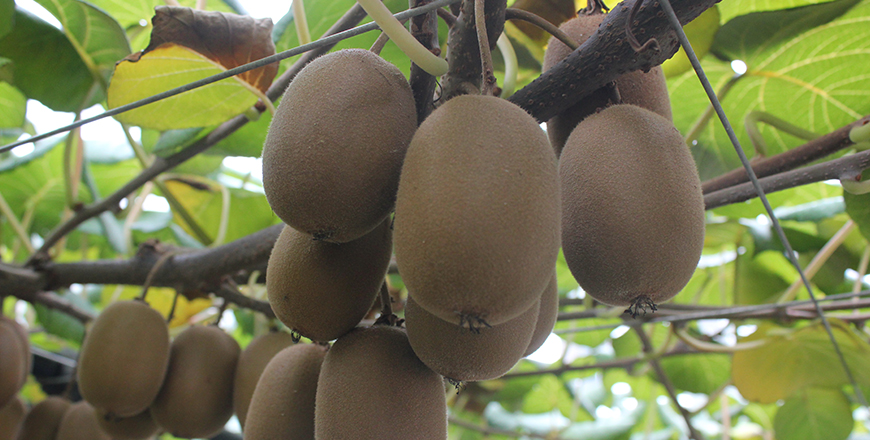

기획취재콘텐츠
- Home
- 제주라이프
- 기획취재콘텐츠
Pioneers of Jeju’s Tropical and Subtropical Crop Industry Part 1새로운 글


The history of tropical and subtropical crop farming in Jeju is naturally shorter than Korea’s traditional crops. It means there is a wider room for experiments and new possibilities. The growth of the tropical and subtropical crop industry in Jeju was made possible by farmers and innovators who spared no effort in experimenting with new crops and striving to commercialize them. This section introduces the pioneers of Jeju’s tropical and subtropical crop industry, which opened up a new market with the support from agricultural experts and Jeju’s local government.
Halla Gold: Toward a World-Leading Kiwi Brand
Kiwifruit is the edible berry of the woody vine species from the genus Actinidia. It is one of the most popular and most consumed subtropical fruits in Korea. Kiwifruit farming grows under temperatures 14°C or higher. For this reason, kiwifruit farming in Korea is currently concentrated in the southern part of the country.

- ⓒHalla Gold’s distribution center -
Kiwifruit farming in Jeju began in 1974. Most farms grew kiwifruit outdoors until 1994 before resorting to greenhouse cultivation to protect crops from pests and typhoons. After 2004, thanks to the contract farming of gold kiwi with New Zealand’s Zespri and the policy support for gold kiwi farmers from the Korean government, greenhouse cultivation became more common. In Jeju, kiwifruit is the second most grown fruit after tangerine. The total production area of Jeju kiwifruit increased by 188% between 2001 and 2018, and the number of kiwifruit-growing farms increased by 237%. The total revenue from kiwifruit was at KRW 31,119 million in 2018, which accounted for 64% of the total revenue from the island’s fruit production (KRW 49,009 million). The success was made possible by various R&D efforts, including cultivar development, cultivation technology/capacity building, and profit improvement through farm organization.
- A full view of Halla Gold’s distribution center ⓒHalla Gold’s distribution center -
Halla Gold was founded in 2008 as an agricultural cooperative consisting of nine members. The number of members has then increased to around 230. Halla Gold promotes shared growth among farmers across its business cycles, from kiwifruit planting to the sale of its products. Halla Gold’s main products are Halla Gold and Jecy Gold. Halla Gold and Jecy Gold are Korea’s very own kiwifruit cultivars, tailored to Korea’s cultivation environment and developed by the Agricultural Research Center for Climate Change and the Jeju Agricultural Technology Center. Halla Gold signed two license agreements with RDA in 2010 and 2014 for Halla Gold and Sweet Gold kiwifruits, respectively. In 2013, the cooperative built a pollen production center on a 6,600 m2 area, securing a stable source of pollen. Halla Gold supplies more than 100 kg of pollen to farmers per year. In 2017, the cooperative fully replaced imported pollen with locally sourced pollen, helping farmers reduce costs.
- A full view of the Halla Gold’s pollen production center ⓒHalla Gold’s distribution center -
- A full view of the Halla Gold’s fruit sorting area ⓒHalla Gold’s distribution center -
The cooperative supplies high-quality kiwifruit cultivars and holds a wide range of activities to increase production capabilities and improve relevant technologies. It also provides farmers with opportunities to exchange technical information along with consulting services and kiwifruit farming capacity-building programs. In 2012, Halla Gold members and executives visited New Zealand for a training program and invited a kiwifruit expert to Korea for a farmer training program.
- A study visit to New Zealand ⓒHalla Gold’s distribution center -
Halla Gold ensures high-quality kiwifruits through these capacity-building activities. Moreover, the organization’s kiwifruits are all jointly selected and sold by its members. Halla Gold also developed its own kiwifruit brand, “Kiwirang.” The cooperative has also established its own selection and quality control criteria for delivering kiwifruits with consistent quality. It also provides farms with pesticide residue standard sheets indicating both domestic and international requirements.
- The logos of Kiwirang (left) and Premium Kiwirang (right) ⓒHalla Gold’s distribution center -
Halla Gold won an Outstanding Cultivar Award and a Bronze Prize at the Best Agricultural Product Expo in 2010 in recognition of its efforts to develop outstanding cultivars and raise the quality of production and distribution and for the high quality of its products. It was also named an Outstanding Agricultural Product Management Facility by the National Agricultural Products Quality Management Service in 2014. In the same year, the cooperative received an outstanding produce management certification from Jeju National University.
The excellent quality of Halla Gold products is also recognized outside of Korea. After exporting to Singapore in October 2015, Halla Gold then began exporting kiwifruits to Hong Kong, Malaysia, Japan, and other countries. Halla Gold exported 148 t of its 2019 kiwifruit harvest (worth KRW 6.5 billion), which accounts for 38% of Korea’s total kiwifruit export and 51% of the total sales from kiwifruit export. It should be noted that the cooperative sells kiwifruit to Southeast Asia, the main producer of tropical and subtropical fruits.
- Halla Gold Kiwi Export Ceremony ⓒHalla Gold’s distribution center -
To prove the excellence of Jeju kiwifruit in the global market and improve its competitive edge as a fruit exporter, Halla Gold seeks to obtain a global good agricultural practice (GAP) certification. To that end, the cooperative provided agricultural management ledges and on-site consulting services for its members who have farms that are eligible for certification, as well as training programs for all farmers. Moreover, the organization surveyed kiwifruit cultivars and packaging units preferred by different countries and incorporated the findings into its practices. As a result of these efforts and on top of the company’s growth as a produce exporter, Halla Gold was selected for the 2020 Export Leader Organization Development Project.
Halla Gold plans to expand its operations in the overseas export market with Halla Sweet, a cultivar developed by the RDA as a strategic export item. The cooperative’s current goal is to access various markets in Southeast Asia, India, and other regions and develop the world’s best kiwifruit brand with the chops to surpass New Zealand’s kiwifruit.